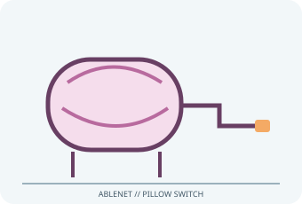

[ ADAPTIVE AND SWITCH-ACCESS CONTROLS // IDENTIFIED COMPONENT ]
AbleNet Pillow Switch
Soft pressure switch with a roughly 3.3 in (8 cm) activation area and a wired mono switch lead for head, cheek or other low-force access.

MODEL IDENTIFICATION: Product number 58750. Confirm the exact label, regional suffix, revision, receiver/accessories, software and bundle before service or compatibility claims.
Model specifications
| Catalog subcategory | Adaptive and switch-access controls |
|---|---|
| Exact device / model / SKU | Product number 58750 |
| Device and control operation | Pressure-operated momentary switch, approximately 3.5 mm (1/8 in) mono plug and 5 ft (1.52 m) cable. Requires a compatible switch input; it does not act as a USB mouse by itself. |
| Host interface | Pressure-operated momentary switch, approximately 3.5 mm (1/8 in) mono plug and 5 ft (1.52 m) cable. Requires a compatible switch input. |
| Switch/control inputs | Pressure-operated momentary switch, approximately 3.5 mm (1/8 in) mono plug and 5 ft (1.52 m) cable. Requires a compatible switch input; it does not act as a USB mouse by itself. |
| Mounting and adjustability | Soft foam pad can be secured using its mounting plate, hook-and-loop fastening or safety pin as specified by AbleNet. Mounting position is adjustable; place and secure the cable to prevent pulling. |
| OS / host compatibility | Communication devices, adapted toys, switch interfaces and computer access systems that accept a 3.5 mm mono switch closure. Computers generally require a compatible USB switch interface and host-side access software. |
| Accessibility considerations | Soft, broad surface may be activated with a cheek, head or other controlled movement; test location and force without pressure on the airway, skin or joints. |
Accessibility and safety notes
Soft, broad surface may be activated with a cheek, head or other controlled movement; test location and force without pressure on the airway, skin or joints.
Safety pin is sharp: use only when properly secured, remove before laundering/cleaning and keep away from skin. Keep fabric dry/clean per instructions; avoid wrapping the lead around a user or mobility aid.
Document observed condition separately from manufacturer specifications. Test activation and host response in a controlled, non-safety-critical setup; record accessories, host OS, driver/app and firmware versions.
Manufacturer and support sources
- AbleNet Pillow Switch product pageManufacturer/support reference for model identification and setup. Confirm applicable region, hardware revision and bundle.
- AbleNet Pillow Switch setup and supportManufacturer/support reference for model identification and setup. Confirm applicable region, hardware revision and bundle.
Support pages and compatibility lists can change. Retain the manual revision used for a physical-device assessment.